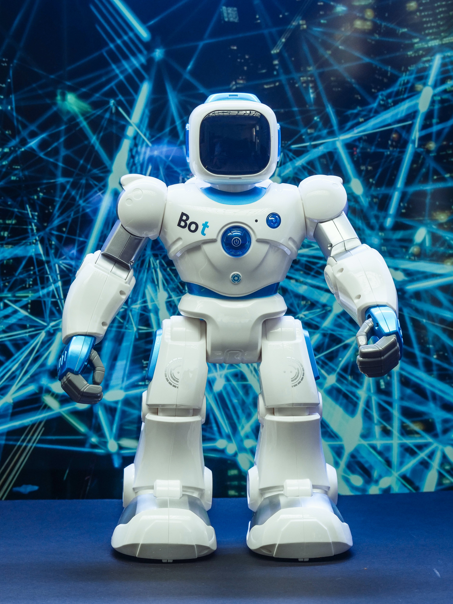

모두를 위한 기술 플랫폼 네이버
글로벌 테크 기업, 네이버는 기술과 서비스로 세상의 모든 가능성을 연결합니다.
함께하는 사용자와 비즈니스 파트너들이 다가오는 내일을 앞서 구현하고
글로벌 시장에서 더 큰 성장을 이룰 수 있도록 지원합니다.
기술

AI 기술
AI가 일상이 되고, 상상이 비즈니스가 되는 AI 기술

검색 기술
진화된 검색 경험을 제공하는 검색 기술

로봇 기술
사람과의 자연스러운 공존을 위한 로봇 기술
디지털 트윈 기술
현실 세계를 그대로 복제하는 디지털 트윈 기술
회사 연혁
| 23년 11월 | 제2 데이터선터 각 세종 설립 |
| 23년 1월 | 글로벌 C2C 패션 플랫폼 '포시마크'인수 |
| 22년 4월 | 제2사옥 '1784'입주 |
| 22년 3월 | 라인디지털프론티어(LDF), '이북 이니셔티즈 재팬' 인수 |
| 21년 5월 | 글로벌 No.1 웹소설 플랫폼 '왓패드' 인수 |
| 19년 11월 | 네이버파이낸셜(주) 설립 |
| 17년 5월 | 네이버웹툰(유) 설립 |
| 17년 1월 | 네이버랩스(주) 설립 |
| 16년 8월 | 스노우(주) 설립 |
| 13년 6월 | 데이터센터 각 설립 |
| 10년 4월 | 신사옥 '그린팩토리' 입주 |
| 09년 5월 |
네이버클라우드(주) (구. 네이버 비즈니스 플랫폼) 설립 |
기업 정보
| 설립연도 | 1999년 6월 |
| 본사 위치 | 경기도 성남시 분당구 정자일로 95 |
| 주요 서비스 | 온라인 검색포털, 모바일 메신저 플랫폼 |
| 주요 사업 | 온라인 광고 및 콘텐츠 사업 |
| 해외 계열 법인 | 일본, 미국, 프랑스, 중국, 베트남, 대만, 태국, 인도네시아 외 |
| 매출액 | 8조 2,201억 원(2022년) |
| 전체인력 | 4,930명 (본사2022년 기준) |